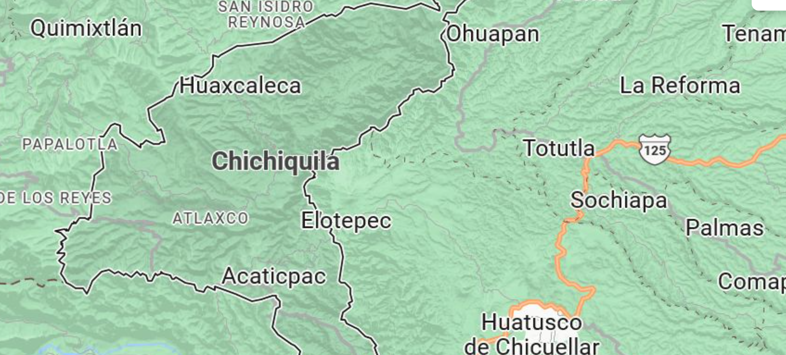

CHICHIQUILA-UBICACION

El municipio de Chichiquila se encuentra ubicado en el extremo oriente del estado de Puebla en la Sierra Madre Oriental y en las faldas del volcán Citlaltépetl o Pico de Orizaba. Tiene una extensión territorial total de 109.721 kilómetros cuadrados y sus coordenadas extremas son 19° 08' - 19° 17' de latitud norte y 96° 59' - 97° 09' de longitud oeste. Su altitud va de un máximo de 2 400 y un mínimo de 1 200 metros sobre el nivel del mar.
El municipio limita al norte y al oeste con el municipio de Quimixtlán. Al noreste, este y sur limita con el estado de Veracruz de Ignacio de la Llave; al noreste con el municipio de Ixhuacán de los Reyes, al este con el municipio de Tlaltetela y con el municipio de Huatusco, al sureste con el municipio de Coscomatepec y al sur con el municipio de Calcahualco.